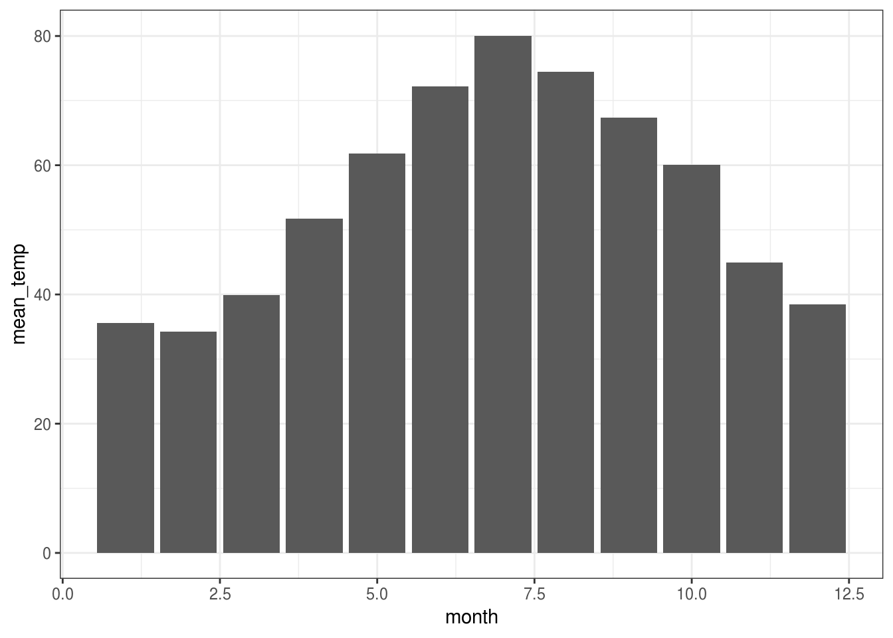

3 Rad sa podacima
U ovom poglavlju ćemo se upoznati sa osnovnim metodama rada sa podacima, prvenstveno kroz paket dplyr, koji je jedan od najkorišćenijih paketa u R-u. Pre upoznavanja sa tim paketom, osnvrnućemo se na osnovnu strukturu podataka u R-u, dataframe, koja se koristi za rad sa tabelarnim podacima.
3.1 Dataframe
Dataframe je najčešći način čuvanja podataka u R-u i vrlo je pogodan za rad i analizu. Služi za prikaz tabelarnih podataka, pa liči na matricu, s tim što je dataframe u snovi lista koja sadrži vektore jednakih dužina (kolone), pri čemu ti vektori ne moraju biti istog tipa. Dakle možemo imati jednu kolonu koju čine brojevi, a drugu tekstualni podaci.
Dataframe se pravi na sledeći način:
df <- data.frame(kolona1 = c(1, 2, 3), kolona2 = c("prvi", "drugi", "treci"))
df## kolona1 kolona2
## 1 1 prvi
## 2 2 drugi
## 3 3 treciOvako smo dobili dataframe sa dve kolone, od kojih je jedna numerička a druga tekstualna.
str(df)## 'data.frame': 3 obs. of 2 variables:
## $ kolona1: num 1 2 3
## $ kolona2: Factor w/ 3 levels "drugi","prvi",..: 2 1 3R podrazumevano pretvara tekstualne podatke u faktore, to možemo preduprediti ako dodamo argument stringsAsFactors = FALSE.
df <- data.frame(kolona1 = c(1, 2, 3), kolona2 = c("prvi", "drugi", "treci"), stringsAsFactors = FALSE)
str(df)## 'data.frame': 3 obs. of 2 variables:
## $ kolona1: num 1 2 3
## $ kolona2: chr "prvi" "drugi" "treci"df## kolona1 kolona2
## 1 1 prvi
## 2 2 drugi
## 3 3 treciDva dataframe-a (koji imaju isi broj kolona) se mogu spojiti da dobijemo više kolona korišćenjem funkcije cbind.
df1 <- data.frame(kolona1 = c(1, 2, 3), kolona2 = c("prvi", "drugi", "treci"), stringsAsFactors = FALSE)
df2 <- data.frame(kolona3 = c(4,5,6), kolona4 = c("prvi1", "drugi1", "treci1"), stringsAsFactors = FALSE)
df3 <- cbind(df1, df2)
df3## kolona1 kolona2 kolona3 kolona4
## 1 1 prvi 4 prvi1
## 2 2 drugi 5 drugi1
## 3 3 treci 6 treci1Takodje, mogu se nadovezati po vrstama (ako imaju ista imena kolona) funkcijom rbind.
df1 <- data.frame(kolona1 = c(1, 2, 3), kolona2 = c("prvi", "drugi", "treci"), stringsAsFactors = FALSE)
df2 <- data.frame(kolona1 = c(4,5,6), kolona2 = c("prvi1", "drugi1", "treci1"), stringsAsFactors = FALSE)
df4 <- rbind(df1, df2)
df4## kolona1 kolona2
## 1 1 prvi
## 2 2 drugi
## 3 3 treci
## 4 4 prvi1
## 5 5 drugi1
## 6 6 treci1Vrednostima kolona možemo pristupati pomoću operatora $, kao u listama, a istim možemo i dodati nove kolone.
df$kolona1## [1] 1 2 3df$kolona5 <- c(7,8,9)
df## kolona1 kolona2 kolona5
## 1 1 prvi 7
## 2 2 drugi 8
## 3 3 treci 9Medjutim, možda elegantniji način filtriranja i odabira podskupova dataframe-a je korišćenjem uglatih zagrada. Koristimo notaciju df[redovi, kolone], gde prvim argumentom odredjujemo koje redove želimo da uzmemo, a drugim koje kolone. Prazno mesto za neki od argumenata znači “uzmi sve”.
df[,] # sve## kolona1 kolona2 kolona5
## 1 1 prvi 7
## 2 2 drugi 8
## 3 3 treci 9df[1,] # prva vrsta## kolona1 kolona2 kolona5
## 1 1 prvi 7df[,1] # prva kolona## [1] 1 2 3Redovi mogu biti ili vektori brojeva koji označavaju indekse redova koje da uzmemo, ili vektori TRUE/FALSE vrednosti iste dužine kao broj vrsta u dataframe-u, pri čemu se tada biraju redovi na pozicijama gde je u vektoru vrednost TRUE.
df4[c(1,3,4), ] # sve kolone, redovi 1,3,4## kolona1 kolona2
## 1 1 prvi
## 3 3 treci
## 4 4 prvi1df4[df4$kolona1 > 3, ] # sve kolone, one vrste kod kojih je kolona1 veca od 3## kolona1 kolona2
## 4 4 prvi1
## 5 5 drugi1
## 6 6 treci1Kolone mogu biti ili vektori brojeva koji označavaju koje kolone da uzmemo prema indeksu, ili vektori stringova, koji označavaju imena kolona koje da uzmemo.
df3[, c(1,3)] # sve vrste, 1 i 3 kolona## kolona1 kolona3
## 1 1 4
## 2 2 5
## 3 3 6df3[, c("kolona1", "kolona3")] # isto## kolona1 kolona3
## 1 1 4
## 2 2 5
## 3 3 6df3[c(1,3), c("kolona1", "kolona3")] # prvi i treci red, prva i treca kolona## kolona1 kolona3
## 1 1 4
## 3 3 6Korisna stvar je da ako koristimo vektore brojeva za indeksiranje, ukoliko stavimo znak - ispred, to znači da izuzimamo te redove/kolone.
df[, -1] # sve bez prve kolone## kolona2 kolona5
## 1 prvi 7
## 2 drugi 8
## 3 treci 9df[-2, ] # sve bez druge vrste## kolona1 kolona2 kolona5
## 1 1 prvi 7
## 3 3 treci 9df[-c(1,2), c("kolona2", "kolona5")] # druga i peta kolona, bez prve i druge vrste## kolona2 kolona5
## 3 treci 9Konačno, za osnovne informacije o tabeli postoje funkcije colnames, rownames, ncol i nrow, za koje možete pretpostaviti šta rade.
3.2 Obrada podataka - dplyr paket
Prethodno navedeni način rada sa tabelarnim podacima učitanim kao dataframe može postati prilično nezgrapan kod komplikovanijih zahteva, pa je stoga smišljen mnogo elegantniji pristup pomoću paketa dplyr. Uvodni tutorijal za paket možete naći i na https://cran.r-project.org/web/packages/dplyr/vignettes/dplyr.html.
Zansnovan je na korišćenju nekoliko osnovnih radnji koje se primenjuju na podacima, koje su implementirane funkcijama:
select- biranje kolona iz tabelefilter- filtriranje vrsta tabelearrange- sortiranje vrsta na osnovu nekih kolonamutate- pravljenje novih kolona korišćenjem postojećihsummarise- računanje neke sumarne statistike (grupisanih) podataka
Postoji i mnogo više funkcija u ovom paketu, koje su često slične navedenim i koje ćemo kad za to bude potrebe pokazati.
Uz ovaj paket se upotrebljava malo čunija sintaksa, zasnovana na korišćenju operatora kompozicije %>%. Najlakše ćemo pokazati primerom šta on radi.
Uzmimo pomoću paketa dplyr kolonu 1 iz našeg dataframe-a.
library(dplyr)
df %>% select(kolona1)## kolona1
## 1 1
## 2 2
## 3 3Ovo je ekvivalentno pozivu
select(df, kolona1)## kolona1
## 1 1
## 2 2
## 3 3Operator %>% radi tako što prosledjuje levi operand kao prvi argument funkcije date sa desne strane operatora, pa ostale argumente prosledjuje kao dodatne. Suštinski, kod x %>% f(y) postaje f(x, y). Ako želimo da specifikujemo gde hoćemo da stavimo levu stranu operatora, koristimo .. Na primer, gornji kod je ekvivalentan
df %>% select(., kolona1)## kolona1
## 1 1
## 2 2
## 3 3Vremenom će postati ovakva sintaksa prirodna. Vrlo je elegantna jer omogućava jednostavno nadovezivanje. Na sledeći način iz df izaberemo prve dve kolone i filtriramo da uzmemo vrste gde je prva kolona veća od 1.
df %>%
select(kolona1, kolona2) %>%
filter(kolona1 > 1)## kolona1 kolona2
## 1 2 drugi
## 2 3 treciOvime smo videli već primere korišćenja dve funkcije u dplyr paketu - select i filter.
3.3 Učitavanje eksternih podataka
Prikažimo mogućnosti paketa dplyr kroz istraživanje podataka o životnom veku u državama, poteklih od Svetske zdravstvene organizacije. Podaci koje ćemo posmatrati su dostupni na https://www.kaggle.com/kumarajarshi/life-expectancy-who.
Kada preuzmemo podatke, učitavamo ih funkcijom read.csv:
who_data <- read.csv("Life Expectancy Data.csv")
who_data %>% sample_n(15) # stampamo 15 slucajno izabranih## Country Year Status Life.expectancy
## 1 Saudi Arabia 2005 Developing 73.1
## 2 United States of America 2008 Developed 78.2
## 3 Gabon 2004 Developing 59.7
## 4 Papua New Guinea 2008 Developing 61.4
## 5 South Africa 2005 Developing 53.8
## 6 Sweden 2000 Developed 79.6
## 7 Qatar 2006 Developing 76.6
## 8 Norway 2007 Developed 85.0
## 9 Sweden 2013 Developed 81.9
## 10 United Republic of Tanzania 2003 Developing 58.0
## 11 Italy 2000 Developed 79.4
## 12 Algeria 2011 Developing 74.9
## 13 Mali 2000 Developing 49.8
## 14 Azerbaijan 2003 Developing 67.8
## 15 Micronesia (Federated States of) 2007 Developing 68.2
## Adult.Mortality infant.deaths Alcohol percentage.expenditure
## 1 11 9 0.05 1117.04813
## 2 18 27 8.74 0.00000
## 3 322 2 8.13 443.47506
## 4 29 11 0.81 103.72777
## 5 498 55 8.69 709.31710
## 6 73 0 6.20 3689.72730
## 7 83 0 1.28 448.59530
## 8 67 0 6.60 14829.41215
## 9 57 0 7.30 1212.66633
## 10 459 103 2.34 0.00000
## 11 77 3 9.78 31.50582
## 12 116 21 0.56 509.00204
## 13 37 60 0.47 23.94507
## 14 154 7 0.55 42.41491
## 15 175 0 1.64 0.00000
## Hepatitis.B Measles BMI under.five.deaths Polio Total.expenditure
## 1 97 373 6.2 10 96 3.42
## 2 94 140 65.7 31 94 16.20
## 3 NA 63 3.3 3 44 3.26
## 4 59 0 43.4 14 76 4.60
## 5 79 615 43.6 84 75 7.77
## 6 NA 59 52.8 0 99 8.18
## 7 96 144 65.0 0 95 2.58
## 8 NA 0 57.5 0 93 8.58
## 9 67 51 58.5 0 98 11.97
## 10 95 1673 17.2 160 97 4.60
## 11 94 1457 55.0 3 97 7.91
## 12 95 112 55.0 24 95 5.29
## 13 NA 1578 15.6 111 53 6.29
## 14 51 1978 43.6 8 79 6.56
## 15 9 0 64.7 0 79 11.99
## Diphtheria HIV.AIDS GDP Population thinness..1.19.years
## 1 96 0.1 13739.8294 NA 7.2
## 2 96 0.1 NA NA 0.7
## 3 45 11.1 5685.5777 136425.0 7.4
## 4 63 1.3 1178.7247 6787187.0 1.4
## 5 79 29.5 5414.6343 476667.2 11.6
## 6 99 0.1 29283.5500 887219.0 1.4
## 7 96 0.1 6256.5593 NA 4.9
## 8 93 0.1 85128.6576 479153.0 0.7
## 9 98 0.1 6283.2452 96379.0 1.4
## 10 95 11.5 NA NA 7.9
## 11 87 0.1 251.2426 5694218.0 0.5
## 12 95 0.1 5432.2523 36819558.0 5.9
## 13 43 2.5 269.3484 196769.0 11.0
## 14 77 0.1 883.6440 82341.0 3.0
## 15 79 0.1 NA NA 0.2
## thinness.5.9.years Income.composition.of.resources Schooling
## 1 7.3 0.761 12.4
## 2 0.6 NA NA
## 3 7.2 0.640 12.3
## 4 1.3 0.469 8.9
## 5 13.9 0.609 12.9
## 6 1.3 0.873 15.9
## 7 4.5 0.835 13.7
## 8 0.7 0.934 17.6
## 9 1.3 0.904 15.8
## 10 7.9 NA NA
## 11 0.5 0.823 14.8
## 12 5.8 0.724 14.0
## 13 1.9 0.291 4.4
## 14 3.0 0.659 10.8
## 15 0.2 0.625 11.0Paket dplyr koristi malo bogatiju strukturu umesto dataframe-a za tabelarne podatke, a to je tibble. Podatke pretvaramo u taj format na sledeći način:
who_data <- as_tibble(who_data)
who_data## # A tibble: 2,938 x 22
## Country Year Status Life.expectancy Adult.Mortality infant.deaths
## <fct> <int> <fct> <dbl> <int> <int>
## 1 Afghan… 2015 Devel… 65 263 62
## 2 Afghan… 2014 Devel… 59.9 271 64
## 3 Afghan… 2013 Devel… 59.9 268 66
## 4 Afghan… 2012 Devel… 59.5 272 69
## 5 Afghan… 2011 Devel… 59.2 275 71
## 6 Afghan… 2010 Devel… 58.8 279 74
## 7 Afghan… 2009 Devel… 58.6 281 77
## 8 Afghan… 2008 Devel… 58.1 287 80
## 9 Afghan… 2007 Devel… 57.5 295 82
## 10 Afghan… 2006 Devel… 57.3 295 84
## # … with 2,928 more rows, and 16 more variables: Alcohol <dbl>,
## # percentage.expenditure <dbl>, Hepatitis.B <int>, Measles <int>,
## # BMI <dbl>, under.five.deaths <int>, Polio <int>,
## # Total.expenditure <dbl>, Diphtheria <int>, HIV.AIDS <dbl>, GDP <dbl>,
## # Population <dbl>, thinness..1.19.years <dbl>,
## # thinness.5.9.years <dbl>, Income.composition.of.resources <dbl>,
## # Schooling <dbl>Vidimo blage razlike u prikazu.
Korisno je pogledati podatke funkcijom glimpse (iz dplyr), gde vidimo tip promenljivih i prvih nekoliko podataka iz odgovarajuće kolone.
glimpse(who_data)## Observations: 2,938
## Variables: 22
## $ Country <fct> Afghanistan, Afghanistan, Afghan…
## $ Year <int> 2015, 2014, 2013, 2012, 2011, 20…
## $ Status <fct> Developing, Developing, Developi…
## $ Life.expectancy <dbl> 65.0, 59.9, 59.9, 59.5, 59.2, 58…
## $ Adult.Mortality <int> 263, 271, 268, 272, 275, 279, 28…
## $ infant.deaths <int> 62, 64, 66, 69, 71, 74, 77, 80, …
## $ Alcohol <dbl> 0.01, 0.01, 0.01, 0.01, 0.01, 0.…
## $ percentage.expenditure <dbl> 71.279624, 73.523582, 73.219243,…
## $ Hepatitis.B <int> 65, 62, 64, 67, 68, 66, 63, 64, …
## $ Measles <int> 1154, 492, 430, 2787, 3013, 1989…
## $ BMI <dbl> 19.1, 18.6, 18.1, 17.6, 17.2, 16…
## $ under.five.deaths <int> 83, 86, 89, 93, 97, 102, 106, 11…
## $ Polio <int> 6, 58, 62, 67, 68, 66, 63, 64, 6…
## $ Total.expenditure <dbl> 8.16, 8.18, 8.13, 8.52, 7.87, 9.…
## $ Diphtheria <int> 65, 62, 64, 67, 68, 66, 63, 64, …
## $ HIV.AIDS <dbl> 0.1, 0.1, 0.1, 0.1, 0.1, 0.1, 0.…
## $ GDP <dbl> 584.25921, 612.69651, 631.74498,…
## $ Population <dbl> 33736494, 327582, 31731688, 3696…
## $ thinness..1.19.years <dbl> 17.2, 17.5, 17.7, 17.9, 18.2, 18…
## $ thinness.5.9.years <dbl> 17.3, 17.5, 17.7, 18.0, 18.2, 18…
## $ Income.composition.of.resources <dbl> 0.479, 0.476, 0.470, 0.463, 0.45…
## $ Schooling <dbl> 10.1, 10.0, 9.9, 9.8, 9.5, 9.2, …Sumarne podatke po kolonama vidimo ugradjenom funkcijom summary.
summary(who_data)## Country Year Status
## Afghanistan : 16 Min. :2000 Developed : 512
## Albania : 16 1st Qu.:2004 Developing:2426
## Algeria : 16 Median :2008
## Angola : 16 Mean :2008
## Antigua and Barbuda: 16 3rd Qu.:2012
## Argentina : 16 Max. :2015
## (Other) :2842
## Life.expectancy Adult.Mortality infant.deaths Alcohol
## Min. :36.30 Min. : 1.0 Min. : 0.0 Min. : 0.0100
## 1st Qu.:63.10 1st Qu.: 74.0 1st Qu.: 0.0 1st Qu.: 0.8775
## Median :72.10 Median :144.0 Median : 3.0 Median : 3.7550
## Mean :69.22 Mean :164.8 Mean : 30.3 Mean : 4.6029
## 3rd Qu.:75.70 3rd Qu.:228.0 3rd Qu.: 22.0 3rd Qu.: 7.7025
## Max. :89.00 Max. :723.0 Max. :1800.0 Max. :17.8700
## NA's :10 NA's :10 NA's :194
## percentage.expenditure Hepatitis.B Measles BMI
## Min. : 0.000 Min. : 1.00 Min. : 0.0 Min. : 1.00
## 1st Qu.: 4.685 1st Qu.:77.00 1st Qu.: 0.0 1st Qu.:19.30
## Median : 64.913 Median :92.00 Median : 17.0 Median :43.50
## Mean : 738.251 Mean :80.94 Mean : 2419.6 Mean :38.32
## 3rd Qu.: 441.534 3rd Qu.:97.00 3rd Qu.: 360.2 3rd Qu.:56.20
## Max. :19479.912 Max. :99.00 Max. :212183.0 Max. :87.30
## NA's :553 NA's :34
## under.five.deaths Polio Total.expenditure Diphtheria
## Min. : 0.00 Min. : 3.00 Min. : 0.370 Min. : 2.00
## 1st Qu.: 0.00 1st Qu.:78.00 1st Qu.: 4.260 1st Qu.:78.00
## Median : 4.00 Median :93.00 Median : 5.755 Median :93.00
## Mean : 42.04 Mean :82.55 Mean : 5.938 Mean :82.32
## 3rd Qu.: 28.00 3rd Qu.:97.00 3rd Qu.: 7.492 3rd Qu.:97.00
## Max. :2500.00 Max. :99.00 Max. :17.600 Max. :99.00
## NA's :19 NA's :226 NA's :19
## HIV.AIDS GDP Population
## Min. : 0.100 Min. : 1.68 Min. :3.400e+01
## 1st Qu.: 0.100 1st Qu.: 463.94 1st Qu.:1.958e+05
## Median : 0.100 Median : 1766.95 Median :1.387e+06
## Mean : 1.742 Mean : 7483.16 Mean :1.275e+07
## 3rd Qu.: 0.800 3rd Qu.: 5910.81 3rd Qu.:7.420e+06
## Max. :50.600 Max. :119172.74 Max. :1.294e+09
## NA's :448 NA's :652
## thinness..1.19.years thinness.5.9.years Income.composition.of.resources
## Min. : 0.10 Min. : 0.10 Min. :0.0000
## 1st Qu.: 1.60 1st Qu.: 1.50 1st Qu.:0.4930
## Median : 3.30 Median : 3.30 Median :0.6770
## Mean : 4.84 Mean : 4.87 Mean :0.6276
## 3rd Qu.: 7.20 3rd Qu.: 7.20 3rd Qu.:0.7790
## Max. :27.70 Max. :28.60 Max. :0.9480
## NA's :34 NA's :34 NA's :167
## Schooling
## Min. : 0.00
## 1st Qu.:10.10
## Median :12.30
## Mean :11.99
## 3rd Qu.:14.30
## Max. :20.70
## NA's :1633.4 Osnovne funkcije paketa dplyr
Proći ćemo nekoliko primera osnovnih funkcija iz paketa. Najviše ćemo koristiti podatke iz paketa nycflights13, pa ga učitavamo
library(nycflights13)Prelazimo na pregled funkcija.
3.4.1 select - odabir kolona
Sa ovom funkcijom smo se već susreli i nećemo dužiti. Ona služi da iz tabele koja ima mnogo kolona odaberemo samo one koje su nam od interesa, radi lakšeg pregleda.
Odaberimo iz baze flights samo kolone godina, mesec, dan, polazipte i destinacija.
flights %>%
select(year, month, day, origin, dest)## # A tibble: 336,776 x 5
## year month day origin dest
## <int> <int> <int> <chr> <chr>
## 1 2013 1 1 EWR IAH
## 2 2013 1 1 LGA IAH
## 3 2013 1 1 JFK MIA
## 4 2013 1 1 JFK BQN
## 5 2013 1 1 LGA ATL
## 6 2013 1 1 EWR ORD
## 7 2013 1 1 EWR FLL
## 8 2013 1 1 LGA IAD
## 9 2013 1 1 JFK MCO
## 10 2013 1 1 LGA ORD
## # … with 336,766 more rows3.4.2 filter - Filtriranje redova
Ova funkcija služi za odabir odgovarajućih vrsta tabele, tj. opservacija, na osnovu željenih kriterijuma.
Kao primer, možemo da izdvojimo iz baze letova one letove koji idu ka Portlandu, sa kodom aerodroma "PDX".
portland_flights <- flights %>%
filter(dest == "PDX")
#View(portland_flights)Kao argument funkciji filter prosledjuje se uslov koji želimo da ispunjavaju redovi koje biramo. To je zapravo vektor TRUE i FALSE vrednosti, kao kod indeksiranja klasičnog dataframe-a. Ovde smo koristili operator jednakosti ==, ali možemo koristiti i druge matematičke operatore poput >, <, >=, <=, !=. Više kriterijuma možemo spajati operatorima konjukcije & (‘i’) i disjunkcije | (‘ili’). Naravno, pored ovih, mogu se koristiti bilo koje funkcije koje daju kao rezultat logičke vektore.
Na primer, možemo da odaberemo letove koji kreću sa aerodroma JFK, a leteli su duže od sat vremena.
flights %>%
filter(origin == "JFK" & air_time > 60)## # A tibble: 86,058 x 19
## year month day dep_time sched_dep_time dep_delay arr_time
## <int> <int> <int> <int> <int> <dbl> <int>
## 1 2013 1 1 542 540 2 923
## 2 2013 1 1 544 545 -1 1004
## 3 2013 1 1 557 600 -3 838
## 4 2013 1 1 558 600 -2 849
## 5 2013 1 1 558 600 -2 853
## 6 2013 1 1 558 600 -2 924
## 7 2013 1 1 606 610 -4 837
## 8 2013 1 1 611 600 11 945
## 9 2013 1 1 613 610 3 925
## 10 2013 1 1 615 615 0 1039
## # … with 86,048 more rows, and 12 more variables: sched_arr_time <int>,
## # arr_delay <dbl>, carrier <chr>, flight <int>, tailnum <chr>,
## # origin <chr>, dest <chr>, air_time <dbl>, distance <dbl>, hour <dbl>,
## # minute <dbl>, time_hour <dttm>Odredimo sve letove sa JFK do Berlingtona (BTV) i Sijetla (SEA), koji su od oktobra do kraja godine.
btv_sea_flights <- flights %>%
filter(origin == "JFK" & (dest == "BTV" | dest == "SEA") & month >= 10)
#View(btv_sea_flights)Umesto korišćenja operatora konjunkcije, možemo samo razdvojiti sve uslove koji moraju biti zadovoljeni sa zapetom.
btv_sea_flights <- flights %>%
filter(origin == "JFK", (dest == "BTV" | dest == "SEA"), month >= 10)
#View(btv_sea_flights)3.4.3 arrange - sortiranje redova
Često ima smisla sortirati podatke u odnosu na neku kolonu prilikom istraživanja podataka. Paket dplyr nam daje jednostavan način za to kroz funkciju arrange. Par jednostavnih primera sledi.
Sortirajmo letove po trajanju leta rastuće…
flights %>%
arrange(air_time) %>%
select(tailnum, air_time)## # A tibble: 336,776 x 2
## tailnum air_time
## <chr> <dbl>
## 1 N16911 20
## 2 N12167 20
## 3 N27200 21
## 4 N13913 21
## 5 N13955 21
## 6 N12921 21
## 7 N947UW 21
## 8 N8501F 21
## 9 N12160 21
## 10 N16987 21
## # … with 336,766 more rows… ili opadajuće
flights %>%
arrange(desc(air_time)) %>%
select(tailnum, air_time)## # A tibble: 336,776 x 2
## tailnum air_time
## <chr> <dbl>
## 1 N77066 695
## 2 N389HA 691
## 3 N388HA 686
## 4 N380HA 686
## 5 N384HA 683
## 6 N386HA 679
## 7 N59053 676
## 8 N380HA 676
## 9 N386HA 675
## 10 N76065 671
## # … with 336,766 more rowsVrlo korisna opcija je što se sortiranje može vršiti po više promenljivih. Na primer, da bismo sortirali letove po datumu leta, počevši od najskorijeg, treba da sortiramo prvo opadajuće po mesecu, ali i one iz istog meseca treba sortirati opadajuće po danu. Ovo radimo na sledeći način
# radi lakseg pregleda, uzecemo podskup od
# 10 letova
set.seed(1)
subflights <- flights %>% sample_n(10)
subflights %>%
arrange(desc(month), desc(day)) %>%
select(tailnum, month, day)## # A tibble: 10 x 3
## tailnum month day
## <chr> <int> <int>
## 1 N855UA 9 25
## 2 N624JB 8 16
## 3 N725MQ 7 22
## 4 N328AA 3 7
## 5 N13716 2 15
## 6 N176PQ 2 7
## 7 N756US 1 30
## 8 N14237 1 29
## 9 <NA> 1 29
## 10 N10156 1 16Napomena! Obratite pažnju, bitan je redosled argumenata u arrange, ako sortiramo prvo po danu pa po mesecu, ne dobijamo željeni rezultat.
subflights %>%
arrange(desc(day), desc(month)) %>%
select(tailnum, month, day)## # A tibble: 10 x 3
## tailnum month day
## <chr> <int> <int>
## 1 N756US 1 30
## 2 N14237 1 29
## 3 <NA> 1 29
## 4 N855UA 9 25
## 5 N725MQ 7 22
## 6 N624JB 8 16
## 7 N10156 1 16
## 8 N13716 2 15
## 9 N328AA 3 7
## 10 N176PQ 2 7Sortirajmo letove opadajuće po datumu, ali rastuće po trajanju leta
flights %>%
arrange(desc(month), desc(day), air_time) %>%
select(tailnum, month, day, air_time)## # A tibble: 336,776 x 4
## tailnum month day air_time
## <chr> <int> <int> <dbl>
## 1 N952UW 12 31 28
## 2 N13975 12 31 29
## 3 N197JB 12 31 32
## 4 N304JB 12 31 32
## 5 N76514 12 31 32
## 6 N236JB 12 31 32
## 7 N329JB 12 31 33
## 8 N351JB 12 31 33
## 9 N3JAAA 12 31 33
## 10 N206JB 12 31 33
## # … with 336,766 more rows3.4.4 mutate - dodavanje nove kolone
Ovom funkcijom možemo da napravimo nove kolone koristeći postojeće. Na primer, možemo da vršimo konverziju iz Farenhajta u Celzijus.
# ovako smo ranije
# weather$celsius <- (weather$temp - 32) * 5 / 9
# dplyr nacin:
weather <- weather %>%
mutate(celsius = (temp - 32) * 5 / 9)
#View(weather)Možemo praviti više novih kolona odjednom. Na primer, dodaćemo kolonu “gain” koja predstavlja razliku izmedju kašnjenja polaska i kašnjenja dolaska, tj. neki vid nadoknadjenog vremena kada je let kasnio sa polaskom. Pored toga, dodaćemo kolonu koja predstavlja let u satima, i odrediti i “gain” po satu.
flights <- flights %>%
mutate(
gain = dep_delay - arr_delay,
hours = air_time / 60,
gain_per_hour = gain / hours
)I sortiramo po gain_per_hour
flights %>%
arrange(gain_per_hour) %>%
select(dep_delay, arr_delay, gain, hours, air_time, gain_per_hour)## # A tibble: 336,776 x 6
## dep_delay arr_delay gain hours air_time gain_per_hour
## <dbl> <dbl> <dbl> <dbl> <dbl> <dbl>
## 1 171 273 -102 0.517 31 -197.
## 2 62 177 -115 0.6 36 -192.
## 3 11 122 -111 0.6 36 -185
## 4 115 233 -118 0.667 40 -177
## 5 -7 106 -113 0.65 39 -174.
## 6 -8 123 -131 0.767 46 -171.
## 7 -1 109 -110 0.65 39 -169.
## 8 39 152 -113 0.7 42 -161.
## 9 3 94 -91 0.567 34 -161.
## 10 33 136 -103 0.65 39 -158.
## # … with 336,766 more rowsAko uposlimo i paket lubridate, koji značajno olakšava rad sa datumima u R-u, možemo dodati i kolonu koja sadrži tačno vreme leta, umesto komponenti koje imamo sada.
#install.packages("lubridate")
library(lubridate)
flights <- flights %>%
mutate(departure = make_datetime(year, month, day, hour, minute))
flights %>%
select(year, month, day, hour, minute, departure)## # A tibble: 336,776 x 6
## year month day hour minute departure
## <int> <int> <int> <dbl> <dbl> <dttm>
## 1 2013 1 1 5 15 2013-01-01 05:15:00
## 2 2013 1 1 5 29 2013-01-01 05:29:00
## 3 2013 1 1 5 40 2013-01-01 05:40:00
## 4 2013 1 1 5 45 2013-01-01 05:45:00
## 5 2013 1 1 6 0 2013-01-01 06:00:00
## 6 2013 1 1 5 58 2013-01-01 05:58:00
## 7 2013 1 1 6 0 2013-01-01 06:00:00
## 8 2013 1 1 6 0 2013-01-01 06:00:00
## 9 2013 1 1 6 0 2013-01-01 06:00:00
## 10 2013 1 1 6 0 2013-01-01 06:00:00
## # … with 336,766 more rowsSada prethodno sortiranje opadajuće možemo odratiti po toj novoj koloni.
set.seed(1)
flights %>% sample_n(10) %>%
arrange(desc(departure)) %>%
select(tailnum, month, day, departure)## # A tibble: 10 x 4
## tailnum month day departure
## <chr> <int> <int> <dttm>
## 1 N855UA 9 25 2013-09-25 14:17:00
## 2 N624JB 8 16 2013-08-16 12:41:00
## 3 N725MQ 7 22 2013-07-22 08:30:00
## 4 N328AA 3 7 2013-03-07 21:35:00
## 5 N13716 2 15 2013-02-15 20:48:00
## 6 N176PQ 2 7 2013-02-07 06:15:00
## 7 N756US 1 30 2013-01-30 08:00:00
## 8 <NA> 1 29 2013-01-29 19:00:00
## 9 N14237 1 29 2013-01-29 07:15:00
## 10 N10156 1 16 2013-01-16 19:35:00Specijalan slučaj mutate naredbe je rename koju koristimo za preimenovanje kolona.
weather %>% rename(temp_C = celsius)## # A tibble: 26,115 x 16
## origin year month day hour temp dewp humid wind_dir wind_speed
## <chr> <dbl> <dbl> <int> <int> <dbl> <dbl> <dbl> <dbl> <dbl>
## 1 EWR 2013 1 1 1 39.0 26.1 59.4 270 10.4
## 2 EWR 2013 1 1 2 39.0 27.0 61.6 250 8.06
## 3 EWR 2013 1 1 3 39.0 28.0 64.4 240 11.5
## 4 EWR 2013 1 1 4 39.9 28.0 62.2 250 12.7
## 5 EWR 2013 1 1 5 39.0 28.0 64.4 260 12.7
## 6 EWR 2013 1 1 6 37.9 28.0 67.2 240 11.5
## 7 EWR 2013 1 1 7 39.0 28.0 64.4 240 15.0
## 8 EWR 2013 1 1 8 39.9 28.0 62.2 250 10.4
## 9 EWR 2013 1 1 9 39.9 28.0 62.2 260 15.0
## 10 EWR 2013 1 1 10 41 28.0 59.6 260 13.8
## # … with 26,105 more rows, and 6 more variables: wind_gust <dbl>,
## # precip <dbl>, pressure <dbl>, visib <dbl>, time_hour <dttm>,
## # temp_C <dbl>3.4.5 summarise - sumarne statistike
Ova, jedna od korisnijih funkcija, služi za računanje neke statistike nad podacima. Podaci mogu biti i grupisani, što ćemo videti kasnije. Za početak, vidimo neki prosti primer.
Prosečno vreme trajanja letova dobijamo ovako:
flights %>% summarise(mean(air_time))## # A tibble: 1 x 1
## `mean(air_time)`
## <dbl>
## 1 NAIma NA vrednosti, pa dodajemo na.rm = TRUE, da bi ih ignorisali prilikom računa.
flights %>% summarise(mean(air_time, na.rm = TRUE))## # A tibble: 1 x 1
## `mean(air_time, na.rm = TRUE)`
## <dbl>
## 1 151.Da vidimo i ukupan broj letova, koristimo specijalnu funkciju n(). Dodajmo i kvantile iz poziva summary.
no_na_flights <- flights %>%
filter(!is.na(air_time))
no_na_flights %>%
summarise(
count = n(),
min_time = min(air_time),
time_q1 = quantile(air_time, 0.25),
median_time = median(air_time),
mean_time = mean(air_time),
time_13 = quantile(air_time, 0.75),
max_time = max(air_time)
)## # A tibble: 1 x 7
## count min_time time_q1 median_time mean_time time_13 max_time
## <int> <dbl> <dbl> <dbl> <dbl> <dbl> <dbl>
## 1 327346 20 82 129 151. 192 695Vidimo poklapanje sa summary.
summary(no_na_flights$air_time)## Min. 1st Qu. Median Mean 3rd Qu. Max.
## 20.0 82.0 129.0 150.7 192.0 695.03.4.6 group_by - grupisanje opservacija
Često je potrebno, posebno za sumarizavije, da grupišemo podatke u odnosu na neku promenljivu, da bismo videli svojstva odgovarajućih grupa. Na primer, možda želimo da vidimo prosečnu temperaturu po mesecima iz skupa podataka weather, umesto sveukupnog proseka temperature u celoj tabeli. To radimo uz pomoć funkcije group_by.
library(nycflights13)
library(dplyr)
weather %>%
group_by(month) %>%
summarise(mean_temp = mean(temp, na.rm = TRUE),
stdev_temp = sd(temp, na.rm = TRUE))## # A tibble: 12 x 3
## month mean_temp stdev_temp
## <dbl> <dbl> <dbl>
## 1 1 35.6 10.2
## 2 2 34.3 6.98
## 3 3 39.9 6.25
## 4 4 51.7 8.79
## 5 5 61.8 9.68
## 6 6 72.2 7.55
## 7 7 80.1 7.12
## 8 8 74.5 5.19
## 9 9 67.4 8.47
## 10 10 60.1 8.85
## 11 11 45.0 10.4
## 12 12 38.4 9.98Ovo naravno možemo i prikazati grafiički pomoću bar plota.
library(ggplot2)
weather %>%
group_by(month) %>%
summarise(mean_temp = mean(temp, na.rm = TRUE),
stdev_temp = sd(temp, na.rm = TRUE)) %>%
ggplot(aes(x = month, y = mean_temp)) + geom_col()
Analizirajmo malo dijamante. U ggplot2 paketu postoji skup podataka diamonds.
diamonds## # A tibble: 53,940 x 10
## carat cut color clarity depth table price x y z
## <dbl> <ord> <ord> <ord> <dbl> <dbl> <int> <dbl> <dbl> <dbl>
## 1 0.23 Ideal E SI2 61.5 55 326 3.95 3.98 2.43
## 2 0.21 Premium E SI1 59.8 61 326 3.89 3.84 2.31
## 3 0.23 Good E VS1 56.9 65 327 4.05 4.07 2.31
## 4 0.290 Premium I VS2 62.4 58 334 4.2 4.23 2.63
## 5 0.31 Good J SI2 63.3 58 335 4.34 4.35 2.75
## 6 0.24 Very Good J VVS2 62.8 57 336 3.94 3.96 2.48
## 7 0.24 Very Good I VVS1 62.3 57 336 3.95 3.98 2.47
## 8 0.26 Very Good H SI1 61.9 55 337 4.07 4.11 2.53
## 9 0.22 Fair E VS2 65.1 61 337 3.87 3.78 2.49
## 10 0.23 Very Good H VS1 59.4 61 338 4 4.05 2.39
## # … with 53,930 more rowsglimpse(diamonds)## Observations: 53,940
## Variables: 10
## $ carat <dbl> 0.23, 0.21, 0.23, 0.29, 0.31, 0.24, 0.24, 0.26, 0.22, 0.…
## $ cut <ord> Ideal, Premium, Good, Premium, Good, Very Good, Very Goo…
## $ color <ord> E, E, E, I, J, J, I, H, E, H, J, J, F, J, E, E, I, J, J,…
## $ clarity <ord> SI2, SI1, VS1, VS2, SI2, VVS2, VVS1, SI1, VS2, VS1, SI1,…
## $ depth <dbl> 61.5, 59.8, 56.9, 62.4, 63.3, 62.8, 62.3, 61.9, 65.1, 59…
## $ table <dbl> 55, 61, 65, 58, 58, 57, 57, 55, 61, 61, 55, 56, 61, 54, …
## $ price <int> 326, 326, 327, 334, 335, 336, 336, 337, 337, 338, 339, 3…
## $ x <dbl> 3.95, 3.89, 4.05, 4.20, 4.34, 3.94, 3.95, 4.07, 3.87, 4.…
## $ y <dbl> 3.98, 3.84, 4.07, 4.23, 4.35, 3.96, 3.98, 4.11, 3.78, 4.…
## $ z <dbl> 2.43, 2.31, 2.31, 2.63, 2.75, 2.48, 2.47, 2.53, 2.49, 2.…Pogledajmo cenu u zavisnosti kvaliteta (promenljiva cut)
diamonds %>%
group_by(cut) %>%
summarise(avg_price = mean(price))## # A tibble: 5 x 2
## cut avg_price
## <ord> <dbl>
## 1 Fair 4359.
## 2 Good 3929.
## 3 Very Good 3982.
## 4 Premium 4584.
## 5 Ideal 3458.Pogledajmo malo kako radi group_by. Ideja je da od originalnog dataframe-a napravi grupisani dataframe kod koga se operacije primenjuju na svaku grupu ponaosob, umesto kolektivno na celu tabelu.
diamonds_by_cut <- diamonds %>% group_by(cut)
diamonds_by_cut## # A tibble: 53,940 x 10
## # Groups: cut [5]
## carat cut color clarity depth table price x y z
## <dbl> <ord> <ord> <ord> <dbl> <dbl> <int> <dbl> <dbl> <dbl>
## 1 0.23 Ideal E SI2 61.5 55 326 3.95 3.98 2.43
## 2 0.21 Premium E SI1 59.8 61 326 3.89 3.84 2.31
## 3 0.23 Good E VS1 56.9 65 327 4.05 4.07 2.31
## 4 0.290 Premium I VS2 62.4 58 334 4.2 4.23 2.63
## 5 0.31 Good J SI2 63.3 58 335 4.34 4.35 2.75
## 6 0.24 Very Good J VVS2 62.8 57 336 3.94 3.96 2.48
## 7 0.24 Very Good I VVS1 62.3 57 336 3.95 3.98 2.47
## 8 0.26 Very Good H SI1 61.9 55 337 4.07 4.11 2.53
## 9 0.22 Fair E VS2 65.1 61 337 3.87 3.78 2.49
## 10 0.23 Very Good H VS1 59.4 61 338 4 4.05 2.39
## # … with 53,930 more rowsOvaj dataframe je u suštini isti kao ranije, samo što je naznačeno da se grupiše po promenljivoj cut.
Svaka operacija se sada na ovaj dataframe primenjuje na svaku grupu, npr, da vidimo broj elemenata:
# grupisano
diamonds_by_cut %>%
summarise(n())## # A tibble: 5 x 2
## cut `n()`
## <ord> <int>
## 1 Fair 1610
## 2 Good 4906
## 3 Very Good 12082
## 4 Premium 13791
## 5 Ideal 21551# negrupisano
diamonds %>% # moze i ungroup(diamonds_by_cut)
summarise(n())## # A tibble: 1 x 1
## `n()`
## <int>
## 1 53940Nisu sumarizacije jedina opcija. Možemo i odabrati podatak kod koga je najveća cena u svakoj grupi.
diamonds_by_cut %>%
filter(price == max(price))## # A tibble: 5 x 10
## # Groups: cut [5]
## carat cut color clarity depth table price x y z
## <dbl> <ord> <ord> <ord> <dbl> <dbl> <int> <dbl> <dbl> <dbl>
## 1 2.01 Fair G SI1 70.6 64 18574 7.43 6.64 4.69
## 2 2.8 Good G SI2 63.8 58 18788 8.9 8.85 0
## 3 1.51 Ideal G IF 61.7 55 18806 7.37 7.41 4.56
## 4 2 Very Good G SI1 63.5 56 18818 7.9 7.97 5.04
## 5 2.29 Premium I VS2 60.8 60 18823 8.5 8.47 5.16Primetimo, ovde biramo celu vrstu, ne gledamo samo koliki je maksimum.
Dakle, možemo i filtrirati po grupama. Uzmimo iz svake grupe 0.0001% najskupljih.
diamonds_by_cut %>%
filter(price > quantile(price, 0.9999)) %>%
arrange(cut)## # A tibble: 9 x 10
## # Groups: cut [5]
## carat cut color clarity depth table price x y z
## <dbl> <ord> <ord> <ord> <dbl> <dbl> <int> <dbl> <dbl> <dbl>
## 1 2.01 Fair G SI1 70.6 64 18574 7.43 6.64 4.69
## 2 2.8 Good G SI2 63.8 58 18788 8.9 8.85 0
## 3 2 Very Good H SI1 62.8 57 18803 7.95 8 5.01
## 4 2 Very Good G SI1 63.5 56 18818 7.9 7.97 5.04
## 5 2.29 Premium I SI1 61.8 59 18797 8.52 8.45 5.24
## 6 2.29 Premium I VS2 60.8 60 18823 8.5 8.47 5.16
## 7 2.15 Ideal G SI2 62.6 54 18791 8.29 8.35 5.21
## 8 2.07 Ideal G SI2 62.5 55 18804 8.2 8.13 5.11
## 9 1.51 Ideal G IF 61.7 55 18806 7.37 7.41 4.56Vidimo da ovo nije isto kao negrupisani poziv, gde su "Fair" i "Good" kvaliteti izostavljeni.
ungroup(diamonds_by_cut) %>%
filter(price > quantile(price, 0.9999)) %>%
arrange(cut)## # A tibble: 6 x 10
## carat cut color clarity depth table price x y z
## <dbl> <ord> <ord> <ord> <dbl> <dbl> <int> <dbl> <dbl> <dbl>
## 1 2 Very Good H SI1 62.8 57 18803 7.95 8 5.01
## 2 2 Very Good G SI1 63.5 56 18818 7.9 7.97 5.04
## 3 2.29 Premium I SI1 61.8 59 18797 8.52 8.45 5.24
## 4 2.29 Premium I VS2 60.8 60 18823 8.5 8.47 5.16
## 5 2.07 Ideal G SI2 62.5 55 18804 8.2 8.13 5.11
## 6 1.51 Ideal G IF 61.7 55 18806 7.37 7.41 4.56Bolje od kvantila je da koristimo funkciju top_n, za top 2 najskuplja po kvalitetu
diamonds_by_cut %>%
top_n(2, price) %>%
arrange(cut)## # A tibble: 10 x 10
## # Groups: cut [5]
## carat cut color clarity depth table price x y z
## <dbl> <ord> <ord> <ord> <dbl> <dbl> <int> <dbl> <dbl> <dbl>
## 1 2.02 Fair H VS2 64.5 57 18565 8 7.95 5.14
## 2 2.01 Fair G SI1 70.6 64 18574 7.43 6.64 4.69
## 3 2.07 Good I VS2 61.8 61 18707 8.12 8.16 5.03
## 4 2.8 Good G SI2 63.8 58 18788 8.9 8.85 0
## 5 2 Very Good H SI1 62.8 57 18803 7.95 8 5.01
## 6 2 Very Good G SI1 63.5 56 18818 7.9 7.97 5.04
## 7 2.29 Premium I SI1 61.8 59 18797 8.52 8.45 5.24
## 8 2.29 Premium I VS2 60.8 60 18823 8.5 8.47 5.16
## 9 2.07 Ideal G SI2 62.5 55 18804 8.2 8.13 5.11
## 10 1.51 Ideal G IF 61.7 55 18806 7.37 7.41 4.56Poput sortiranja, i grupisanje se može vršiti po više promenljivih. Na primer, da se vratimo na naše avione, možemo da proverimo koliko je letova bilo u svakom mesecu, ali i njih da grupišemo po aerodromima sa kog su poleteli.
flights %>%
group_by(origin, month) %>%
summarise(count = n())## # A tibble: 36 x 3
## # Groups: origin [3]
## origin month count
## <chr> <int> <int>
## 1 EWR 1 9893
## 2 EWR 2 9107
## 3 EWR 3 10420
## 4 EWR 4 10531
## 5 EWR 5 10592
## 6 EWR 6 10175
## 7 EWR 7 10475
## 8 EWR 8 10359
## 9 EWR 9 9550
## 10 EWR 10 10104
## # … with 26 more rowsMožemo i izdvojiti 3 najprometnija meseca za svaki aerodrom.
flights %>%
group_by(origin, month) %>%
summarise(count = n()) %>%
top_n(3, count)## # A tibble: 9 x 3
## # Groups: origin [3]
## origin month count
## <chr> <int> <int>
## 1 EWR 4 10531
## 2 EWR 5 10592
## 3 EWR 7 10475
## 4 JFK 3 9697
## 5 JFK 7 10023
## 6 JFK 8 9983
## 7 LGA 9 9116
## 8 LGA 10 9642
## 9 LGA 12 9067Kako ovo radi? Prilikom prvog poziva summarise “skinuli” smo zadnji sloj grupisanja, pa smo dobili dataframe grupisan samo po origin, pa na njemu top_n radi po grupama za polazni aerordrom. Stoga je bitan redosled grupisanja za ovakve operacije.
3.4.7 join - spajanje tabela
Kada radimo sa dva povezana skupa podataka, nailazićemo na promenljive koje postoje u oba i po kojima bismo mogli ta dva skupa da spojimo u jednu tabelu. Dobar i dosta dublji tutorijal za join operacije je u okviru knjige R for Data Science, na ovom linku.
Na primer, ako pogledamo tabele airlines i flights
airlines## # A tibble: 16 x 2
## carrier name
## <chr> <chr>
## 1 9E Endeavor Air Inc.
## 2 AA American Airlines Inc.
## 3 AS Alaska Airlines Inc.
## 4 B6 JetBlue Airways
## 5 DL Delta Air Lines Inc.
## 6 EV ExpressJet Airlines Inc.
## 7 F9 Frontier Airlines Inc.
## 8 FL AirTran Airways Corporation
## 9 HA Hawaiian Airlines Inc.
## 10 MQ Envoy Air
## 11 OO SkyWest Airlines Inc.
## 12 UA United Air Lines Inc.
## 13 US US Airways Inc.
## 14 VX Virgin America
## 15 WN Southwest Airlines Co.
## 16 YV Mesa Airlines Inc.flights## # A tibble: 336,776 x 23
## year month day dep_time sched_dep_time dep_delay arr_time
## <int> <int> <int> <int> <int> <dbl> <int>
## 1 2013 1 1 517 515 2 830
## 2 2013 1 1 533 529 4 850
## 3 2013 1 1 542 540 2 923
## 4 2013 1 1 544 545 -1 1004
## 5 2013 1 1 554 600 -6 812
## 6 2013 1 1 554 558 -4 740
## 7 2013 1 1 555 600 -5 913
## 8 2013 1 1 557 600 -3 709
## 9 2013 1 1 557 600 -3 838
## 10 2013 1 1 558 600 -2 753
## # … with 336,766 more rows, and 16 more variables: sched_arr_time <int>,
## # arr_delay <dbl>, carrier <chr>, flight <int>, tailnum <chr>,
## # origin <chr>, dest <chr>, air_time <dbl>, distance <dbl>, hour <dbl>,
## # minute <dbl>, time_hour <dttm>, gain <dbl>, hours <dbl>,
## # gain_per_hour <dbl>, departure <dttm>vidimo da imaju kolonu carrier koja označava skraćenicu avio kompanije. Možemo dodati u tabelu flights puno ime avio kompanije koristeći informaciju u tabeli airlines:
full_airline <- flights %>%
inner_join(airlines, by = "carrier")
full_airline %>%
select(tailnum, carrier, name)## # A tibble: 336,776 x 3
## tailnum carrier name
## <chr> <chr> <chr>
## 1 N14228 UA United Air Lines Inc.
## 2 N24211 UA United Air Lines Inc.
## 3 N619AA AA American Airlines Inc.
## 4 N804JB B6 JetBlue Airways
## 5 N668DN DL Delta Air Lines Inc.
## 6 N39463 UA United Air Lines Inc.
## 7 N516JB B6 JetBlue Airways
## 8 N829AS EV ExpressJet Airlines Inc.
## 9 N593JB B6 JetBlue Airways
## 10 N3ALAA AA American Airlines Inc.
## # … with 336,766 more rowsIskoristili smo funkciju inner_join ovaj put. Postoji više *_join funkcija u dplyr paketu, koje odgovaraju onima iz SQL jezika. Takodje, ova operacija je toliko popularna u SQL-u, da ima svoju adresu: http://www.sql-join.com/ (koja se može koristiti za razumevanje).
Glavna razlika medju *_join funkcijama je:
inner_joinzadržava samo one redove za koje u obe tabele postoji vrednost, tj. koje je mogao da upari sa redovima iz druge tabele.left_joinzadržava sve redove iz prve tabele, a tamo gde nema para stavi NAright_joinzadržava sve redove iz druge tabelefull_joinzadržava sve redove iz obe tabele
Na sledećoj slici vidi se grafički prikaz ovih operacija.
Ilustracije raznih join operacija. Preuzeto sa https://r4ds.had.co.nz.
Dakle, kod nas je više smisla imalo koristiti left_join, iako je isti rezultat ovaj put.
full_airline <- flights %>%
left_join(airlines, by = "carrier")Pokazaćemo sada na primeru razlike izmedju ovih raznih vrsta join operacije. Koristimo primere preuzete sa uputstva na stranici https://stat545.com/bit001_dplyr-cheatsheet.html.
Prvo kreiramo tabele
library(readr)
superheroes <- "
name, alignment, gender, publisher
Magneto, bad, male, Marvel
Storm, good, female, Marvel
Mystique, bad, female, Marvel
Batman, good, male, DC
Joker, bad, male, DC
Catwoman, bad, female, DC
Hellboy, good, male, Dark Horse Comics
"
superheroes <- read_csv(superheroes, skip = 1)
publishers <- "
publisher, yr_founded
DC, 1934
Marvel, 1939
Image, 1992
"
publishers <- read_csv(publishers, skip = 1)3.4.7.1 Inner join
Prvo da vidimo inner join
inner_join(superheroes, publishers, by = "publisher")## # A tibble: 6 x 5
## name alignment gender publisher yr_founded
## <chr> <chr> <chr> <chr> <dbl>
## 1 Magneto bad male Marvel 1939
## 2 Storm good female Marvel 1939
## 3 Mystique bad female Marvel 1939
## 4 Batman good male DC 1934
## 5 Joker bad male DC 1934
## 6 Catwoman bad female DC 1934Vidimo da fali Hellboy, jer Dark Horse Comics nije medju izdavačima u tabeli (a isto nema ni izdavača Image iz tabele izdavača, jer se ne pojavljuje medju herojima).
3.4.7.2 Left join
Kod left join operacije, čuvamo originalnu tabelu u celosti i uparujemo sa drugom gde je moguće
left_join(superheroes, publishers, by = "publisher")## # A tibble: 7 x 5
## name alignment gender publisher yr_founded
## <chr> <chr> <chr> <chr> <dbl>
## 1 Magneto bad male Marvel 1939
## 2 Storm good female Marvel 1939
## 3 Mystique bad female Marvel 1939
## 4 Batman good male DC 1934
## 5 Joker bad male DC 1934
## 6 Catwoman bad female DC 1934
## 7 Hellboy good male Dark Horse Comics NASada kod Hellboy-a nemamo godinu osnivanja izdavača. jer ne postoji u tabeli.
3.4.7.3 Right join
Pogledajmo right join.
right_join(superheroes, publishers, by = "publisher")## # A tibble: 7 x 5
## name alignment gender publisher yr_founded
## <chr> <chr> <chr> <chr> <dbl>
## 1 Batman good male DC 1934
## 2 Joker bad male DC 1934
## 3 Catwoman bad female DC 1934
## 4 Magneto bad male Marvel 1939
## 5 Storm good female Marvel 1939
## 6 Mystique bad female Marvel 1939
## 7 <NA> <NA> <NA> Image 1992Dodao je jedan red pun NA vrednosti, za izdavača Image, koji nije nadjen u prvoj tabeli. Svrha ove operacije je vrlo upitna, pa se retko i koristi.
3.4.7.4 Full join
Full join prikazuje sve redove i upisuje NA tamo gde nešto fali
full_join(superheroes, publishers, by = "publisher")## # A tibble: 8 x 5
## name alignment gender publisher yr_founded
## <chr> <chr> <chr> <chr> <dbl>
## 1 Magneto bad male Marvel 1939
## 2 Storm good female Marvel 1939
## 3 Mystique bad female Marvel 1939
## 4 Batman good male DC 1934
## 5 Joker bad male DC 1934
## 6 Catwoman bad female DC 1934
## 7 Hellboy good male Dark Horse Comics NA
## 8 <NA> <NA> <NA> Image 1992Dakle imamo uniju left i right joina.